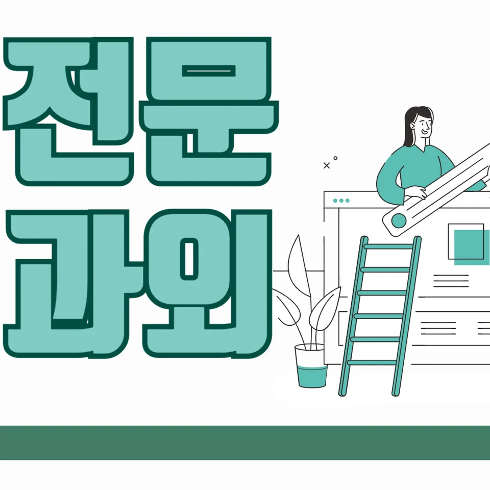

PageType : SUBJECT
URL : /경기도과외/화성시과외/목동동과외/목동동영어과외/
지역 교육환경이 영어 학습에 미치는 영향
목동동영어과외를 생각할 때 가장 먼저 눈에 들어오는 변화는 학교 주변의 학습 분위기입니다. 같은 학년이라도 도서·스터디·학원 선택이 촘촘해지면, 학생들은 영어를 “한 번 끝내는 과목”이 아니라 “계속 이어지는 루틴”으로 받아들이기 시작합니다. 이때 학습 속도는 과외의 강도보다, 일상 속에서 단어·문장·짧은 듣기 자료가 끊기지 않도록 만드는 방식에 좌우됩니다.
또래가 꾸준히 듣기와 독해를 병행하는 환경에서는 영어에 대한 감각이 먼저 살아나고, 그 결과 문법을 어렵다고만 느끼는 시기가 늦어지곤 합니다. 반대로 시험 직전만 움직이던 학생은 목동동영어과외 같은 체계가 있어도 학습 시간을 “몰아서” 쓰는 습관이 남아, 이해 속도가 일정하게 유지되지 않습니다. 지역 환경이 바꾸는 것은 결국 공부량보다 ‘주간 단위 흐름’입니다.
학교가 바뀌는 시기나 학기 중반이 되면 영어 학습의 온도도 달라집니다. 수행평가 준비로 발표·서술형이 늘어나면, 문장을 단순히 읽는 데서 끝나지 않고 자신의 말과 연결하려는 시도가 커집니다. 목동동영어과외에서는 이런 변화를 따라가며, 듣기·읽기·어휘·구문이 서로 분리되지 않게 묶어주는 편이 중요합니다.
학교마다 달라지는 영어 평가 방식
학교마다 내신 영어의 비중과 평가 결이 다르게 굴러갑니다. 어떤 학교는 서술형에서 근거 문장을 요구하고, 어떤 학교는 선택형 비중이 상대적으로 높아 독해 속도와 오답 회피 능력을 더 보게 됩니다. 그래서 목동동영어과외에서도 “문법을 더 설명”하기보다, 학생이 실제로 맞추는 방식이 학교 평가와 맞물리도록 관찰하는 흐름이 필요합니다.
평가가 바뀌면 학생의 공부 방식도 바뀝니다. 선택형 위주로 익숙해진 학생은 지문을 빠르게 훑지만 근거를 놓치고, 서술형이 늘어나는 순간 문장 이해가 급격히 흔들릴 수 있습니다. 이때 듣기에서 잡아낸 의미 단서가 읽기에서 어떤 형태로 바뀌는지, 어휘가 문장 속에서 어떤 기능을 하는지까지 연결해 봐야 영어 실력이 안정적으로 이어집니다.
학생이 느끼는 부담은 “시험의 난도”가 아니라 “평가가 요구하는 사고 과정”에서 먼저 생깁니다. 내신 준비가 시작되면, 학교가 원하는 독해 태도—시간 배분, 근거 찾기, 오답 패턴 피하기—가 자연스럽게 학습 습관으로 굳어져야 합니다.
학생들이 영어에서 어려움을 느끼는 시점
대부분의 학생은 영어에서 막히는 구간이 반복적으로 나타납니다. 보통 중간 수준에서는 어휘와 문장 구조를 대충 이해해도 점수가 유지되지만, 어느 순간부터는 같은 단어가 다른 역할로 등장하면서 독해가 끊깁니다. 그때 목동동영어과외처럼 학습 과정을 세밀하게 쌓는 접근이 필요해집니다. 단어를 외우는 것만으로는 충분하지 않고, 구문이 의미를 어떻게 만들었는지를 함께 붙잡아야 합니다.
또 다른 어려움은 시험 전 “모르는 게 늘어나는 느낌”에서 시작됩니다. 학생이 오답을 보면 원인을 떠올리려 하기보다 틀린 기억만 남기는 경우가 많고, 결국 복습이 ‘다시 보기’로 끝나 자기주도학습의 방향이 흐려집니다. 이 시기에 오답을 줄이는 훈련은 풀이 기술만이 아니라, 같은 실수가 왜 반복되는지 문장 이해의 어느 단계가 비어 있는지 찾는 과정이어야 합니다.
특히 듣기와 읽기의 균형이 깨질 때 어려움이 커집니다. 듣기는 잘 되는데 독해가 약한 학생은 문장 속 연결어·지시어에서 길을 잃고, 반대로 읽기가 강한 학생은 발음·리듬 단서가 약해져서 시험에서 듣기 점수가 흔들릴 수 있습니다.
학년 변화에 따른 영어 학습의 차이
학년이 올라가면 영어 학습의 부담은 단순히 양이 늘어서가 아니라, 학생이 처리해야 하는 정보의 밀도가 높아져서 커집니다. 초반에는 어휘와 문장 이해 중심으로 성장하지만, 학년이 올라가며 구문을 ‘문장 조각’이 아니라 ‘의미의 흐름’으로 다루는 능력이 요구됩니다. 목동동영어과외에서는 이 전환점을 놓치지 않도록, 학생이 독해 중에 어떤 부분에서 멈추는지 학습 과정을 기록해 조정합니다.
중간 과정에서는 문법을 문제에 적용하는 경험이 늘어납니다. 학생 입장에서는 “문법 개념” 자체보다, 시험 지문 안에서 개념이 어떻게 드러나는지 확인해야 이해가 굳어집니다. 그래서 문법 설명을 길게 늘리기보다, 문장 이해에 필요한 문법 요소를 독해·어휘·듣기와 함께 붙여 반복하는 방식이 더 효율적으로 이어집니다.
고학년이 되면 시간 효율의 문제가 더 뚜렷해집니다. 시험 기간에는 계획을 세워도 실행이 흔들리고, 복습이 밀리면서 약점이 다시 커지곤 합니다. 이때 학습 계획을 꾸준히 유지하는 과정이 곧 영어 실력의 차이로 연결됩니다.
내신과 수행평가를 함께 준비하는 방법
내신과 수행평가는 같은 영어라도 준비 방식이 달라질 수 있습니다. 내신이 지문 기반 선택형 중심이라면, 수행평가는 자신의 생각을 문장으로 정리하는 과정이 중요해집니다. 목동동영어과외에서는 학생이 읽기에서 뽑아낸 근거를 말과 글로 옮길 수 있게 하여, 학교 내신과 수행평가 준비가 한 방향으로 이어지도록 돕습니다.
독해와 문장 이해 능력은 수행평가에서도 그대로 활용됩니다. 학생이 지문을 읽고 요지를 정리할 때, 단어 뜻만으로는 문장이 자연스럽게 나오지 않습니다. 그래서 어휘 학습은 누적 구조로 설계되어야 하고, 문법도 구문 단위로 연결되어 글쓰기·말하기에서 의미가 끊기지 않게 됩니다.
시험 기간에는 수행평가 자료를 준비하면서 내신 복습을 놓치기 쉬운데, 이때 오답 정리와 복습 루틴이 방패 역할을 합니다. 틀린 문장을 다시 읽고, 같은 유형에서 다시 헷갈리는 지점을 표시해 두면 복습이 단순 반복이 아니라 학습 개선으로 바뀝니다. 목동동영어과외를 통해 이런 흐름을 고정하면, 시험 패턴이 바뀌어도 흔들림이 줄어듭니다.
꾸준한 학습 습관이 만드는 영어 실력
영어 실력은 한 번의 집중으로 생기기보다, 공부습관이 누적되며 형성됩니다. 처음에는 짧은 듣기와 쉬운 독해로 감각을 만들고, 그 다음에는 어휘와 구문을 묶어 반복하면서 이해의 속도가 안정됩니다. 목동동영어과외에서는 학생이 ‘오늘 해야 할 것’을 확인하는 방식 자체를 훈련하는 편이 중요합니다.
자기주도학습이 자리 잡는 과정은 거창하지 않습니다. 핵심은 “무엇을 했는지”보다 “다음에 무엇을 바꿔야 하는지”를 기록하는 습관입니다. 예를 들어 듣기에서 놓친 단서를 기록하고, 읽기에서 그 단서가 어떤 형태로 등장하는지 확인하면, 공부는 단순한 반복이 아니라 다음 학습으로 연결됩니다.
또 영어를 꾸준히 공부하는 습관은 학생이 스스로 자신감을 회복하는 통로가 됩니다. 학생이 어려움을 느끼는 시점이 와도, 복습과 오답 관리를 통해 변화가 보이면 흥미가 다시 살아납니다. 결국 영어 학습에서 자신감은 점수의 결과가 아니라 학습 과정의 축적에서 만들어집니다.
복습과 오답 관리가 중요한 이유
오답은 학생이 놓친 단계가 무엇인지 보여주는 지도입니다. 단순히 정답을 확인하고 넘어가면, 같은 유형이 나오거나 지문이 조금만 바뀌었을 때 다시 막힙니다. 목동동영어과외에서는 오답을 ‘정답-오답’이 아니라 ‘왜 이해가 끊겼는지’로 분류하도록 유도합니다. 어휘의 뜻을 잘못 매긴 경우인지, 구문 해석에서 순서가 틀린 경우인지, 듣기에서 확인해야 할 신호를 놓친 경우인지 구분이 되면 복습이 정확해집니다.
복습과 오답 정리가 이어지는 과정에서 중요한 것은 타이밍입니다. 시험 직전의 재확인은 기억을 자극하지만, 학습 내용을 장기 기억으로 연결하는 데는 시간이 필요합니다. 그래서 정기적인 복습을 계획에 포함시키고, 오답이 누적되는 속도를 관리해야 합니다. 학생이 시험 기간에 학습 패턴을 바꾸려 할 때도, 오답과 복습이 중심축으로 남아 있어야 합니다.
오답 관리가 잘 되면 독해의 오류도 줄어듭니다. 지문을 읽는 속도가 빨라질수록 실수가 줄 것 같지만, 실제로는 근거 문장 찾기에서 흔들리는 학생이 많습니다. 이때 오답에서 반복되는 단서를 붙잡아, 문장 이해의 기준을 다시 세우는 것이 필요합니다.
영어 학습에서 확인해야 할 핵심 요소
학생이 영어를 배우며 겪는 변화를 정리해 보면, 결국 핵심 요소는 연결성입니다. 어휘는 문장 속에서 기능으로 이어져야 하고, 문법은 구문 이해를 통해 문제에 적용되는 경험으로 바뀌어야 합니다. 듣기는 읽기에서 의미가 어떻게 바뀌는지 확인하는 다리가 되고, 독해는 문장 이해의 흐름을 유지하는 훈련이 됩니다.
학습 과정에서 확인해야 하는 요소는 시험 범위를 단순히 외우는 것이 아니라 학습 계획이 실제 행동으로 연결되는지입니다. 예를 들어 내신 대비를 시작했는데도 복습과 오답이 뒤로 밀리면, 영어 실력은 정체된 채로 보입니다. 반대로 오답을 분석하고 반복되는 실수를 줄이는 과정이 유지되면, 학생의 공부습관은 점차 자기주도학습으로 확장됩니다.
시간을 효율적으로 사용하는 방법도 핵심입니다. 지문을 오래 붙잡기보다, 이해가 끊긴 지점을 찾아 다시 돌아오는 방식이 효과적입니다. 이때 복습은 단순 재독이 아니라 “다음 문제에서 달라질 행동”을 정하는 작업이 되어야 합니다. 목동동영어과외를 통해 이런 기준이 정리되면, 학교와 가정에서 이어지는 학습 환경이 자연스럽게 맞물립니다.
- 학교 시험 범위와 학습 계획이 연결되고 있는지 확인합니다.
- 독해·문법·어휘를 분리하지 않고 함께 학습하는 습관을 기릅니다.
- 오답의 원인을 분석하고 반복되는 실수를 줄이는 과정을 이어갑니다.
- 정기적인 복습으로 학습 내용을 장기 기억으로 연결합니다.
자주 묻는 질문
영어 학습은 언제부터 체계적으로 준비하는 것이 좋을까요?
시험이 시작되기 전부터 ‘짧게라도 매일’의 리듬을 만드는 시점이 중요합니다. 특히 어휘와 듣기를 끊기지 않게 하면 학년이 올라가며 발생하는 독해 부담이 분산됩니다. 목동동영어과외에서는 학생이 언제 흥미를 잃는지부터 확인하고 그 구간을 앞당겨 예방하는 방식으로 계획을 조정합니다.
학교 내신과 모의고사는 어떻게 함께 준비해야 하나요?
내신은 학교에서 반복되는 평가 결에 맞춰 오답과 복습 루틴을 먼저 고정하고, 모의고사는 독해·시간 배분의 기준을 만들어 점검하는 식으로 분리해 관리하는 편이 안정적입니다. 목동동영어과외에서는 같은 실수 유형이 내신과 모의고사에서 어떻게 다르게 드러나는지 연결해 보며 학습을 정리합니다.
영어 독해 실력은 어떤 과정으로 향상될 수 있나요?
독해는 속도만으로 오르지 않습니다. 문장 이해에서 끊기는 지점을 찾아 어휘와 구문을 연결하고, 듣기에서 확인한 의미 단서를 지문 흐름으로 옮기는 경험이 쌓일 때 안정적으로 성장합니다. 그 과정에서 오답이 줄어드는 속도가 곧 실력 변화의 신호가 됩니다.
어휘와 문법은 어떤 순서로 학습하는 것이 효과적인가요?
어휘를 먼저 외우기만 하면 금방 잊히기 쉬워서, 문법 요소가 포함된 구문 속에서 어휘의 역할을 확인하는 순서가 효과적입니다. 문법을 설명으로 끝내기보다, 학생이 문제 지문에서 문법이 만들어내는 의미를 스스로 찾아보게 해야 학습이 오래 갑니다. 목동동영어과외에서는 이 연결을 반복해서 굳힙니다.
공부 습관을 꾸준히 유지하려면 무엇이 중요할까요?
계획을 ‘세우는 것’보다 ‘실행을 유지하는 장치’가 중요합니다. 매일 끝났는지 체크하고, 오답과 복습이 밀리지 않도록 작은 단위를 고정하면 자기주도학습이 자연스럽게 자리 잡습니다. 목동동영어과외에서는 학생이 시험 기간에도 무너지지 않게 하는 학습 패턴을 함께 조정합니다.
